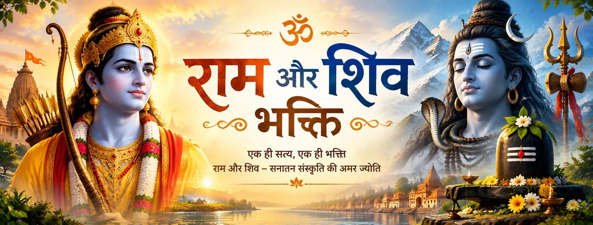

शिव पवित्र नाम का जप करते हैं
बालकाण्ड 11 में महेश्वर को महान मंत्र का जप करने वाला बताया गया है और राम-नाम को काशी में मुक्ति से जोड़ा गया है। यह प्रसंग राम-नाम को अपनी भक्तिपरक धर्मदृष्टि के केंद्र में रखता है।

भक्ति और प्रतीक
हिंदू भक्तिपरंपरा में राम और शिव की भक्ति साथ-साथ दिखाई दे सकती है, बिना इस आवश्यकता के कि भक्त दोनों दिव्य रूपों के भेद को मिटा दे। रामचरितमानस में शिव राम का सम्मान करते हैं, जबकि व्यापक परंपरा में शिव के प्रति गहरी शैव भक्ति भी विद्यमान है।
भक्तिपरक दृष्टि यह नहीं है कि हर परंपरा इस संबंध को बिल्कुल एक ही तरह सिखाती है। बल्कि अलग-अलग ग्रंथ राम और शिव के माध्यम से श्रद्धा, समर्पण, स्मरण और पवित्र एकत्व को व्यक्त करते हैं, जबकि अपनी-अपनी धार्मिक भाषा बनाए रखते हैं।
रामचरितमानस · बालकाण्ड
कई प्रसंग शिव को राम-नाम और राम की परम स्थिति से जुड़े भक्तिपरक संसार के भीतर रखते हैं।
बालकाण्ड 11 में महेश्वर को महान मंत्र का जप करने वाला बताया गया है और राम-नाम को काशी में मुक्ति से जोड़ा गया है। यह प्रसंग राम-नाम को अपनी भक्तिपरक धर्मदृष्टि के केंद्र में रखता है।
बालकाण्ड 28 में शिव पार्वती से कहते हैं कि राम परमात्मा हैं और उनके नाम की शक्ति का वर्णन करते हैं। यह संवाद शिव को गहन समझ की ओर मार्गदर्शन करने वाले गुरु के रूप में प्रस्तुत करता है।
ग्रंथ बार-बार राम को ऐसे प्रभु के रूप में चित्रित करता है जिनके चरणों की महिमा महान दिव्य शक्तियाँ भी मानती हैं, जिनमें शिव भी हैं। यह चित्रण भक्ति के केंद्र में विनम्रता और स्मरण को रखता है।
राम और शिव अपनी अलग दिव्य पहचान बनाए रखते हैं, फिर भी भक्तिपरक साहित्य उनकी उपासना को एक साझा पवित्र संसार में रख सकता है। इससे श्रद्धा बनी रहती है, बिना सभी परंपराओं को एक ही सूत्र में बाँधने के।
परंपरा को पढ़ने की दृष्टि
यह मिलन मुख्यतः भक्तिपरक है; इसका अर्थ यह दावा नहीं कि हर हिंदू परंपरा बिल्कुल एक ही धर्मशास्त्र सिखाती है।
रामचरितमानस में राम-नाम को शक्तिशाली स्मरण-साधना के रूप में प्रस्तुत किया गया है। इसमें बार-बार स्मरण, श्रद्धा और हृदय के रूपांतरण पर बल है।
जब शिव को राम-नाम का जप करते हुए बताया जाता है, तो ग्रंथ निरंतर स्मरण का एक आदर्श प्रस्तुत करता है। भक्त इसे नामों की प्रतिस्पर्धा के बजाय साधना में स्थिरता का निमंत्रण समझ सकते हैं।
बाद की भक्तिपरंपराएँ वैष्णव और शैव भक्ति के सामंजस्य को व्यक्त करने के लिए हरि-हर की भाषा का प्रयोग करती हैं। ऐसी व्याख्याएँ विशेष धर्मशास्त्रीय और भक्तिपरक संदर्भों से जुड़ी होती हैं और उन्हें उसी संदर्भ में पढ़ना चाहिए।
राम-भक्ति और शिव-भक्ति स्मरण, श्रद्धा और समर्पण के माध्यम से एक-दूसरे से जुड़ सकती हैं। भक्ति-परंपरा में राम और शिव की आराधना को परस्पर विरोधी मार्ग मानना आवश्यक नहीं है; दोनों को ईश्वर के प्रति समर्पित भक्ति की अलग-अलग अभिव्यक्तियों के रूप में समझा जा सकता है।
शास्त्रीय संदर्भ
इस पृष्ठ का सबसे मजबूत ग्रंथीय आधार रामचरितमानस है, विशेषकर बालकाण्ड के वे प्रसंग जिनमें राम-नाम की महिमा, शिव द्वारा उसके निरंतर स्मरण और पार्वती के सामने राम के स्वरूप की शिव द्वारा व्याख्या मिलती है। ये प्रसंग तुलसीदास की भक्तिपरक रचना की धर्मदृष्टि को व्यक्त करते हैं; इन्हें वाल्मीकि रामायण के कथन के रूप में प्रस्तुत नहीं करना चाहिए।
Bala Kanda 11 · Glory of the Name · Bala Kanda · Further Name Teaching · Bala Kanda 15 · Shiva and Rama Nama · Bala Kanda 28 · Shiva and Parvati
भक्त के लिए
राम भक्ति और शिव भक्ति को स्मरण, विनम्रता और प्रेम के माध्यम से साधा जा सकता है। शिव द्वारा राम का सम्मान करने की भक्तिपरक छवि हृदय को प्रतिस्पर्धा से हटाकर सच्ची साधना की ओर ले जाती है, जबकि प्रत्येक परंपरा अपनी पवित्र भाषा को बनाए रख सकती है।
भक्तों के सामान्य प्रश्न
हाँ। इसमें शिव को राम-नाम का जप करते और पार्वती को राम के स्वरूप की व्याख्या करते हुए दिखाया गया है। इस प्रकार शिव राम-भक्ति की इस ग्रंथीय धर्मदृष्टि में एक महत्वपूर्ण वाणी बन जाते हैं।
नहीं। अलग-अलग परंपराओं के अपने धर्मशास्त्र, ग्रंथ और साधना-पद्धतियाँ हैं। यहाँ बात यह है कि कुछ भक्तिपरक ग्रंथ राम और शिव के बीच श्रद्धा व्यक्त कर सकते हैं, बिना इन भेदों को मिटाए।
रामचरितमानस में राम-नाम को आध्यात्मिक रूप से शक्तिशाली बताया गया है और शिव को उसके स्मरण से बार-बार जोड़ा गया है। इसलिए राम-नाम शिव की भक्तिपरक उपस्थिति और राम भक्ति के बीच एक स्पष्ट सेतु बनता है।
हिंदू भक्तिपरंपराओं में ऐसी अनेक धाराएँ हैं जिनमें भक्त एक से अधिक दिव्य रूपों का सम्मान करते हैं। विशिष्ट साधना और धर्मदृष्टि संप्रदाय, पारिवारिक परंपरा और व्यक्तिगत भक्ति के अनुसार अलग हो सकती है।